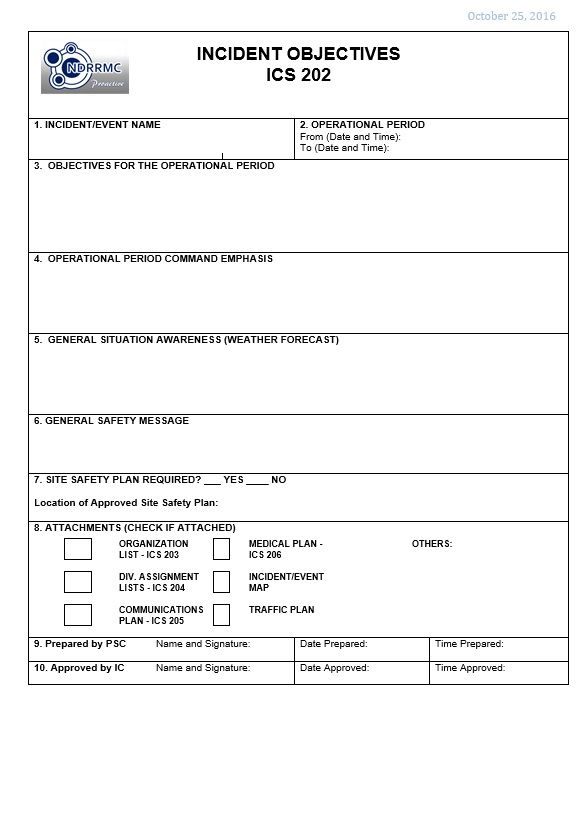

PURPOSE: The ICS 202 describes the basic incident objectives, command emphasis/priorities and safety considerations for use during the next operational period.
PREPARATION: The ICS 202 is completed by the Planning Section Chief (PSC) following each Command and General Staff meeting conducted to prepare the Incident Action Plan (IAP), for the approval of the Incident Commander (IC). In case of Unified Command, one IC may approve the 202.
DISTRIBUTION: The ICS 202 may be reproduced with the IAP and may be part of the IAP given to all supervisory personnel at the Section, Branch, Division / Group and Unit levels. All completed original forms must be given to the Documentation Unit.

BLOCK NO. |
BLOCK TITLE |
INSTRUCTIONS |
| 1 | Incident / Event name | Enter the name assigned to the incident / event |
| 2 | Operational Period | Enter the start date (mm-dd-yyyy) and time (24 hour format) and end date and time for the operational period to which the form applies. |
| 3 | Objectives for the Operational Period | Enter clear, concise statements of the objectives for managing the response. The objectives must be listed in priority order. The objectives are for the incident response for the operational period as well as for the duration of the incident. Include alternate and/or specific tactical objectives as appropriate. Objectives should follow the SMART model.
|
| 4 | Operational Period Command Emphasis | Enter command emphasis which may include tactical priorities. This is not a narrative on the objectives but a discussion about where to place emphasis if there are needs to be prioritized. |
| 5 | General Situation Awareness (Weather Forecast) | Enter the general conditions of the situation. This may include weather forecast to be generally obtained from the Philippine Atmospheric Geophysical and Astronomical Services Administration (PAGASA). |
| 6 | General Safety Message | Enter the general safety message. Make sure that this is consistent with the safety message plan in ICS 208. |
| 7 | Site Safety Plan Required? | Enter Officer should check whether or not a site safety plan (safety plan of the infrastructure of the facility or the work area) is required. If “Yes”, specify the location of the site safety plan. |
| 8 | Attachments | Check the appropriate forms and list other relevant documents to be included as attachments to the IAP. |
| 9 | Prepared by PSC | Enter complete name of the PSC, signature, date (mm-dd-yyyy), and time (24hour format) the form was prepared and completed. |
| 10 | Approved by IC | Enter complete name of the IC, signature, date (mm-dd-yyyy), and time (24hour format) the form was approved. |